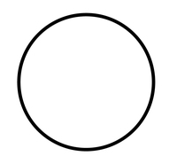

Blog de arte
Inicio
Tarea 1
Tarea 2
Tarea 3
Tarea 4
Tarea 5
Tarea 6
Tarea 7
Este es un blog creado para la presentacion de mis trabajos en la materia de arte
Fotografiando la tragedia griega
Angulos en la fotografia
Planos de la fotografia
Fotografiando la inquisicion
Bodegon
Leyes de la composicion
Fotografiando el cancionero
El cancionero
Iluminacion
Fotografiando al Buscon
Diorama
Orientacion del encuadre
Fotografiando a los miserables
Interpretacion
Apropiación en la fotografía
Fotografiando la noche en el infierno
Intervencion fotografica
Fotografiando el soneto a mi madre
Serie fotografica